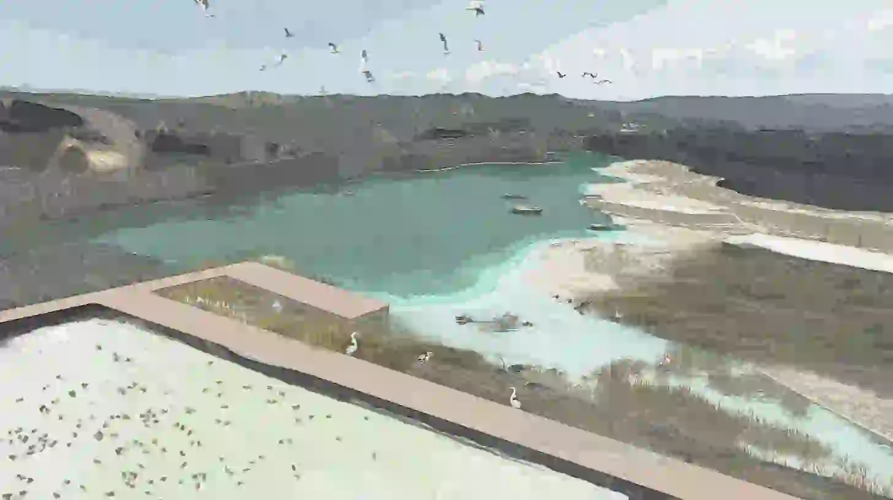

This interactive panorama maps the visible and invisible manifestations of industrial violence across the Çayırhan landscape. By charting critical vectors such as rhizomatic seepage, boundary permeability, and deviated avian paths, the image exposes how a localized infrastructure expands into a regional toxic assemblage. Each layer annotated upon this landscape represents a distinct threshold of contamination, inviting further spatial decryption. Explore the highlighted operations to unravel the deep-seated ecological and material conditions of the ash lake.
This clip works as a trial which explains the process of energy and consuming metabolism of the soil and ash in Çayırhan by showing a relation with the process of smoking in a theoretical background. While creating the steps of the structure, the article of "Encountering Bioinfrastructure" is taken as essential. There are 3 phases, namely; Consumption: energy metabolism, Residue: displaced material, transported ash and Deception: a human made toxic soil mosaic.
Every burn leaves a residue
the falling waste does not vanish
It relocates and becomes the soil
and this synthetic soil constructs
as a deceptive paradise
Puig de la Bellacasa, M. (2014). Encountering bioinfrastructure: Ecological struggles and the sciences of soil. Social Epistemology, 28(1), 26-40.

The final phase of the Çayırhan project looks beyond the crisis of leakage to explore a future of landscape on-site remediation. By deploying localized botanical and soil-cleansing strategies, the design actively counteracts decades of chemical and thermal accumulation within the terrain. The resulting landscape serves as a living laboratory where vegetation absorbs the slow violence of the past, paving the way for the ultimate recovery of regional skyways and water bodies.

This speculative collage work illustrates an alternative scenario that the power plant transforms it internally instead of leaking its waste into the outside world. Instead of turning the waste into an ash lake that poisons the landscape, a closed loop industrial metabolism ecosystem is created inside the factory, which transforms it into building materials such as concrete binder, brick, aerated concrete, and gypsum plaster. Therefore, the scene transforms the factory from a destructive machine, that consumes nature with residues, into a circular production center.
Çavuşoğlu, İ. (2008). UÇUCU KÜLLERİN DOLGU MALZEMESİ OLARAK KULLANILMASI: ÖRNEK BİR UYGULAMA (ÇAYIRHAN). Bilimsel Madencilik Dergisi, 47(3), 3-13.

This speculative collage work illustrates the multi layered landscape which supports life cycle as a healing space in an alternative scenario where a power plant transforms it internally instead of leaking its residue into the outside world. In this scenario, the area of the lake is a natural wetland ecosystem which provides healthy areas for fish farms and local production near Çayırhan Dam. Moreover, since the invisible wall of pollution created by the power plant in the air has disappeared, birds are regaining their historical migration routes and can safely locate themselves in this basin.